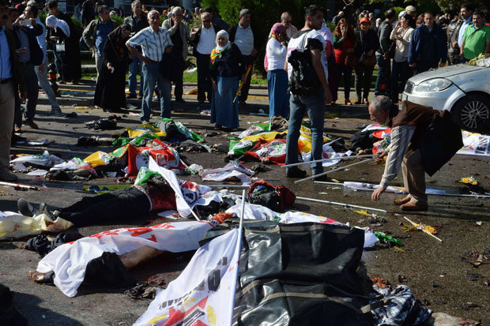

Dodental aanslag Ankara loopt op naar 37
Het dodental van de aanslag in Ankara is opgelopen naar 37. Dat laat de Turkse minister van Volksgezondheid Mehmet Muezzinoglu maandag weten.
71 gewonden liggen nog in het ziekenhuis, van wie vijftien in zorgwekkende toestand, zei de minister. De explosie deed zich zondag aan het einde van de middag voor in de buurt van het Güvenpark, dat weer dichtbij een groot knooppunt voor het openbaar vervoer ligt.
Volgens de veiligheidsdiensten is een van de aanslagplegers een vrouwelijk lid van de PKK. Zij zou zich in 2013 hebben aangesloten bij de Koerdische afscheidingsbeweging.
De vrouw is afkomstig uit de stad Kars. Een andere man van Turkse komaf is geïdentificeerd als tweede aanslagpleger. Hij had banden met de PKK. Inmiddels zijn volgens premier Ahmet Davutoglu elf mensen opgepakt op verdenking van medeplichtigheid.
Door Gerwin Chan
Auto ontploft vermoedelijk door springstof in westen Berlijn
Op een drukke weg in West-Berlijn is dinsdag een auto tijdens het rijden ontploft. De politie vermoedt dat er in de wagen explosieven tot ontploffing zijn gekomen. De bestuurder van de auto is omgekomen.
Het incident gebeurde op de Bismarckstrasse in de wijk Charlottenburg, meldt de politie op Twitter. De weg is afgezet en er de omgeving is ontruimd. Buurtbewoners wordt aangeraden binnen te blijven.
De politie onderzoekt het incident. Het kan zijn dat het om een afrekening gaat in het criminele circuit, maar een mislukte aanslag is niet uitgesloten.
De Bismarckstrasse loopt door het park Berliner-Tiergarten en komt in het oosten uit op de Brandenburger Tor.